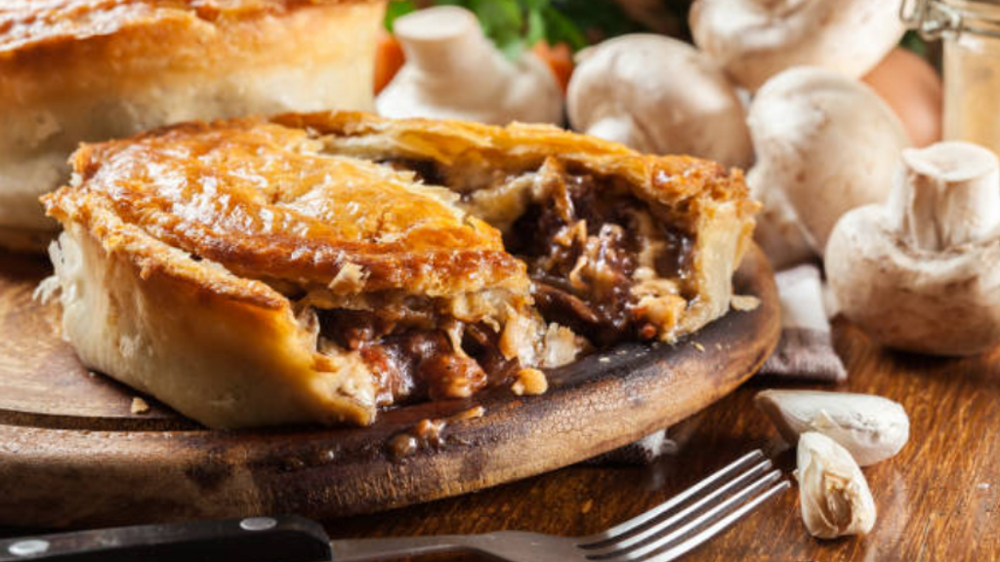

Leftover Brisket Pie

Description
Its a sunday morning the day after you have slaved over the smoker the previous day cooking up a beautiful piece of brisket and you have no doubt cooked way too much. Your thinking to yourself what am I going to do with all this left over brisket!! Think no more, we have got the most delicious and simple brisket pie recipie that will have your family and friends begging for more!!
Ingredients
- Leftover brisket cut into 1 inch cubes(up to 1.5kg)
- 1 onion diced roughly
- 400g bacon rashers, diced fine
- 1 litre of beef stock
- 1/4 cup of plain all purpose flour
- Salt and pepper to taste
Method
- Prepare the oinion, bacon and brisket and place a large pot on the stove on a medium to high heat.
- Pour the beef stock into the pot then add the onion, bacon and flour.
- Bring to a slow boil then add the brisket remembering to stir until boiling again.
- Once boiling turn heat to low-med and simmer with the lid on for 2 hours. Remembering to stir periodically.
- After 2 hours remove the lid ad continue simmering until the brisket pulls down and a thick pie filling consistency is reached, remembering to stir regularly to avoid sticking and burning.
Home